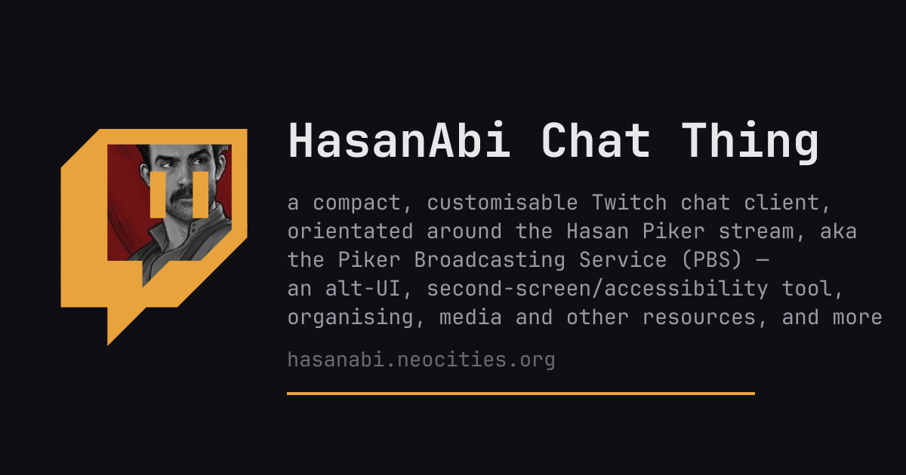

the stream's chat, liberated from twitch.tv. a self-contained page that renders HasanAbi's Twitch chat for use as a second-screen, accessibility, stats, and resource hub. no install, no build step, no account needed to watch, settings and logs stored locally, missed chat backfilled if possible
open the chat thing →
chat
- every emote ecosystem 7TV, BTTV, FFZ, animated & zero-width
- real badges, replies, /me quoted reply blocks with jump-back
- send & reply optional twitch login, readline history, drafts
- whispers own pane, unread chip, /w replies
- gap notices lost spans marked with cause and span
- find bar + archive search user:/kind: filters, 30-day IndexedDB store
- multi-channel ?channel=a,b,c merges rooms
extras
- stream embed draggable popup
- emote picker searchable grid, usage sort, age marks
- msgs/sec sparkline hover reads each second; glorp spikes glow
- stats tab top chatters, badges, emotes & links over time windows
- link cards hover previews, titles, tweet cards, video embeds
- user cards pronouns, history, mod quick-actions
resources
- resources re Hasan, news, live tv, usa pol, organising, mutual aid, free software, open social
- authors era-grouped reading lists with links to the source texts
- accessibility palettes × shade axis, dyslexia fonts, screen-reader live region, reduced motion
backend
Neocities ships a strict CSP —
connect-src 'self' — so no WebSocket to Twitch
IRC is possible. the page embeds a hidden iframe relay hosted on GitHub Pages (no CSP) and talks
postMessage to it: the frontend owns all presentation, the relay owns every outbound
connection. a Cloudflare worker, linkpeek, scrapes og/twitter/JSON-LD/oEmbed metadata
for link cards and stats titles.→ twitch-chat-relay — the relay
& worker source